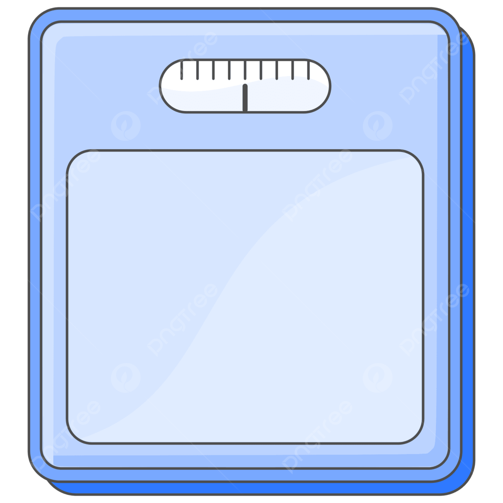

<ion-header [translucent]="true">
  <ion-toolbar color="success">
    <ion-title> App BMI </ion-title>
  </ion-toolbar>
</ion-header>

<ion-content class="ion-padding" [fullscreen]="true">
  <div class="ion-text-center">
    
  </div>
  <ion-card color="tertiary" class="ion-padding" shape="round">
    <ion-item>
      <ion-input label="น้ำหนัก" placeholder="KG"
        [(ngModel)]="weight" ></ion-input>
    </ion-item>

    <ion-item>
      <ion-input label="ส่วนสูง" placeholder="CM"
      [(ngModel)]="hight"></ion-input>
    </ion-item>
    <br />
    <div class="ion-text-center"></div>
    <ion-button size="large" (click)="oncal()" expand="block" shape="round" color="danger" >
      คำนวน
    </ion-button>
  </ion-card>
  <ion-card color="tertiary" class="ion-text-center">
    <ion-card-header>
      <ion-card-subtitle>ผลลัพธ์</ion-card-subtitle>
      <ion-card-title>{{ result | number : '1.0-2' }}</ion-card-title>
    </ion-card-header>
  </ion-card>

  <ion-card color="tertiary" class="ion-text-center">
    <ion-card-header>
      <ion-card-subtitle>แปรผล</ion-card-subtitle>
      <ion-card-title>{{result_text}}</ion-card-title>
    </ion-card-header>
  </ion-card>
</ion-content>
